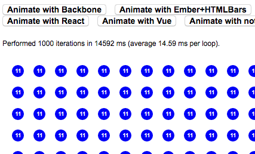

Ember + React
Made Ridiculously Easy
Gordon Hempton - 11/5 - Ember Seattle
Who's this dude?
- Gordon Hempton
- Author of EmberScript and EPF
- Works at outreach.io
- Been using Ember for a long time
What is Ember.js?
- Models
- Views
- Controllers
- Templates
- Components
- Helpers
- Routes
What is React?
- Written, used, and open sourced by Facebook
- Components
- Does some cool things (shadow DOM + diffing)
Two Frameworks? Are you Crazy?
Ember + Ember-Data + jQuery + Handlebars ~= 811k (min)
React ~= 126k (min)
Why Use React?
Worst framework performance comparison ever:
. @floydophone Ember.js will be the #1 JS framework for spinning circles
— Erik Bryn (@ebryn) January 17, 2014Initial Render is Our Bottleneck
Ember is heavily optimized for changes, not the initial render
Our App
outreach.io
Perf Optimization Sucks
Some solutions:
- {{group}}
- Ember.ListView
- Ember Table
- Custom render() method (what we use)
What we want:
- Performance optimizations should be few and far between
- Still benefit from our framework choice in hot code paths
- Reuse as much code as possible
React does a good job at this
Re-render everything– anytime you want
Shadow DOM FTW!
Enter Ember-React
Simple set of utilities to make using React inside of Ember easy
Works inside of existing Ember applications
Demo
React components
// file: app/react/time-ago.js
/** @jsx React.DOM */
export default React.createClass({
render: function() {
var date = this.props.date;
return <time datetime={date}>{moment(date).fromNow()}</time>;
}
});
Inside your Ember templates
<div>{{react 'time-ago' date=date}}<div>
React Routing
React Router
Based on Ember.js Router
React Routing
React.createClass({
render: function() {
return (
<Routes location="history">
<Route name="profiles" path={rootPath + '/profiles'} handler={ProfilesIndex} />
<Route name="routing" path={rootPath + '/routing'} handler={Routing} />
</Routes>
);
}
});
Inside your Ember Routes
export default Ember.Route.extend({
renderTemplate: function() {
var rootPath = this.router.generate(this.routeName);
this.render({
react: ...
});
}
});
Observations
- Ember.js is really good at reacting to incremental changes
- React is really good at rendering everything
- React comes with its own set of opinions (Immutability anyone?)
- React is slightly awkward with complex models
- Ember conventions can be used outside of Ember
When to Use React within an existing Ember app?
- Performance
- Composability
- Complex Rendering
- Masochism
What about Flux?
- Flux != React
- Unidirectional Data Flow
- Antithesis of Ember
- Not a fan
Ember 2.0
From the Ember 2.0 RFC:
In Ember 2.0, we will be adopting a "virtual DOM" and data flow model that embraces the best ideas from React and simplifies communication between components.
We plan to transition to: when a route is entered, it renders a component, passing along the model as an attr. This eliminates a vestigial use of old-style views, and associates the top-level template with a regular component.
Both Angular 2.0 and Ember 2.0 look a lot like React
Try out some of the goodness today with React-Ember
We are first and foremost Javascript Developers
Important not to feel locked in to any particular framework
Things Ember does way better
- Object-Model (minus get/set)
- Conventions
- Ember CLI
- Async
- Community